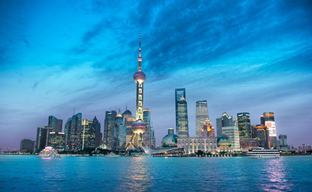

Economy
Economic growth of Shanghai
Shanghai is an important economic, financial, trade and shipping center in China. It contributes greatly to the whole nation's economic structure and the development of society.
Due to its excellent port, Shanghai has been a leading power of China's economic and trade development since ancient times. Since China's reform in 1978, it has had a more open environment and enjoys faster development especially since 2000. Its economy has increased by over 10% for 15 consecutive years.
Taking up only 0.06% of the country's land area, Shanghai now generates about 8.3% of China's gross industrial output value, 10% of its ports' cargo-throughput, 25% of the total value of the country's imports and exports and 12.5% of the total revenue of China.
Financial Industry
Shanghai is China’s financial center. By the end of 2013, there were 1,240 financial institutions, including banks, insurance companies and securities companies, of which 215 were foreign-invested. The set up of the market operation head office of the People’s Bank of China in Shanghai in 2005 has further strengthened the importance of Shanghai as a financial center.
The Bund
Night View
High-tech & Modern Industry Development
Shanghai has made significant progress in developing its high-tech industries, such as computer, telecommunications equipment, and integrated circuit manufacturing. Technology area with the most output value of the high-tech industries is electronic computers and office equipments. The six key advanced industries (including electronic information product, automobile, petrochemical, fine steel, equipment complex, bio-medicine) accounted for 67.3% of the gross industrial output in 2013.
Foreign Investment
Shanghai is a major destination for foreign direct investment. By 2013, multi-national companies have set up 445 regional headquarters and 366 R&D centers in Shanghai.
In 2013 Shanghai accounted for about 14.3% of China’s total utilized FDI. The city’s cosmopolitan character, sophisticated and affluent consumers, and highly educated and skilled labor force make it highly attractive to overseas investors.
In recent years, thanks to liberalizations in the services sector, foreign investment in the services sector has increased more quickly than in the secondary sector. Of the utilized FDI in 2013, the secondary industry accounted for 9.7% and the tertiary industry accounted for 90.1%.
Up to 2012, the cumulative total of utilized FDI where the secondary sector accounted for 36.6% and the tertiary sector accounted for 63%.Hong Kong is the largest source of overseas investment in Shanghai. In 2012 Hong Kong investors signed 1,436 contracts with contracted amount of US$12 billion, and the utilized FDI invested by Hong Kong reached US$6.8 billion or 45% of the total utilized FDI in 2012. Other major investors in 2012 came from Japan, US, Germany and Singapore.